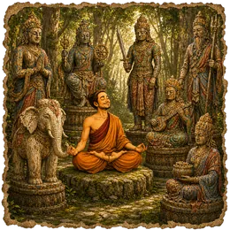

Buddhist guided meditation in the footsteps of the bodhisattvas
Buddhist Meditations follows the great figures of the Mahayana tradition. Walk with Sudhana from teacher to teacher, meet the eleven faces of Avalokiteśvara, cut through looping thoughts with Mañjuśrī's sword, or go down with his lion into the valley of old fears. Carry Kṣitigarbha's light into the dark realms, revisit Samantabhadra's ten vows, climb up to Maitreya's garden and find a way out of eight dangers with Tārā.
Sessions last 20 to 30 minutes and are marked as intermediate. They suit practitioners curious about Buddhism and anyone who enjoys meditations rich in imagery and meaning. No belief is required: each figure serves as a guide to explore a quality such as wisdom, compassion or clarity in your own life.
The sessions
Sudhana’s Journey — The Teachers Along the Path
30 min · intermediateFollow Sudhana’s pilgrimage from teacher to teacher, and learn to see one situation through many eyes.
The Eleven Faces of Avalokiteśvara
22 min · intermediateWith the eleven faces of Avalokiteśvara, learn to meet what comes with gentleness, firmness or silence.
Mañjuśrī’s Sword
20 min · intermediateMañjuśrī’s sword cuts through the sentences that keep looping: read them, see them, and stop fighting them.
Mañjuśrī’s Lion
20 min · intermediateGo down with Mañjuśrī’s lion into the valley of old fears, and look at the rules you apply to yourself.
Kṣitigarbha’s Light in the Dark Realms
21 min · intermediateCross the dark realms — isolation, anger, weariness — with Kṣitigarbha’s light, carrying a lamp into each.
Samantabhadra and the White Elephant — The Ten Great Vows
20 min · intermediateOn Samantabhadra’s white elephant, revisit ten vows and see which still hold in an ordinary life.
Maitreya’s Garden — Meeting the Person You Are Becoming
20 min · intermediateClimb the stairway of Maitreya’s garden, pavilion after pavilion, until you meet the one you are becoming.
Tārā and the Eight Great Dangers
24 min · intermediateOn an ancient road, Tārā shows the way out of eight great dangers — and the handle that was already on the door.
Practice for free
Every session is in the Awakening Minds app: free, no subscription, no ads, no account, and it works offline.
✦ Discover the appRead more
Other categories
Frequently asked questions
Do I need to be Buddhist?
No. These sessions draw on Buddhist figures and stories, but they focus on qualities everyone can explore, such as wisdom, compassion and clarity. No belief or prior knowledge of Buddhism is required to follow them.
Who are the bodhisattvas?
In Mahayana Buddhism, bodhisattvas are figures devoted to the awakening of all beings. Each one embodies a quality: compassion for Avalokiteśvara, wisdom for Mañjuśrī, protection for Tārā. The sessions use them as guides for reflection.
Which session should I start with?
Mañjuśrī's Sword, at 20 minutes, is a good entry point: it works with the sentences that keep looping in your head. Sudhana's Journey, the longest at 30 minutes, gives a broader view of the path.